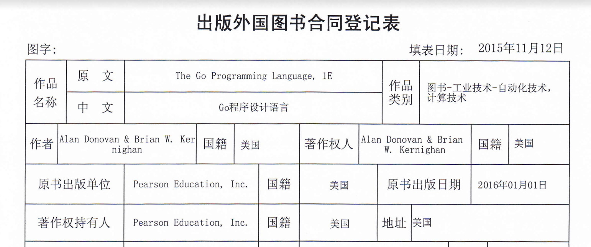

前言
开始认真学习Go语言是2010年开始和国内社区同学参与翻译Go语言文档的翻译工作。同时对于如何将C语言生态接入Go语言是特别关注的一个方向。在2011年初参与了深圳的一个Go语言Meetup，我提交了一个CGO的分享，在分享会上见到了将CGO移植到Windows的国内大佬韦京光老师。后来基于CGO我还包装了OpenCV，写了几个边缘检测和视频运动物体跟踪的例子。一晃这些都是15年前的事情了。
到了2012年Go1发布前后，Go语言的QQ群里已经非常热闹了，大家每天都在争论Go语言的各种语言的细节，很多人都变成了Go语言律师的角色，国内Go语言的项目和图书都慢慢多起来了。我也开始通过CGO和protorpc将Go和日常的C/C++开发工作联系了起来。同时鉴于文档翻译带来的同步问题改造了一个多语言版本的godoc，这是对Go语言的语法树最早的尝试，也为后来编撰《Go语言定制指南》和凹语言的工作带来了很多帮助。与此同时，我有意无意地期待Go语言升级级别的官方图书的出现。
到了2015年真的看到了《Go圣经》的确切的消息，并在同年10月在英文版出版后第一时间找到了电子版本（然后在亚马逊买到了英文原版的纸质版）。我是C语言圣经的忠实粉丝，在拿到Go圣经之后除了第一时间开始研读，也在想何时能够有中文版本出现。虽然我当时算是国内外最早一批Go语言粉丝，但是从来没有想到过能够参与Go圣经的翻译工作，当时也不知道任何和圣经的中文版引进相关的消息。有一天QQ群里有个同学说为什么不能自己翻译，一时冲动下就和群里的小伙伴（相互并不认识）起了圣经翻译的项目。然后4个主要翻译者，在2个月多内完成全部的翻译，是除英文外第一个完成翻译的语言。没想到Go圣经面试都差不多快十年了。
Go圣经的Github仓库很快收到了4-5千个Star，但同时也在12月8号就收到了标题为“请立即停止侵权并删除侵权内容”的邮件并在邮件附上了出版社的翻译合同（当时的翻译工作刚刚过半）：
（1）我社（XXXX出版社）经培生教育集团（Pearson Education,Inc）授权取得《The go programming language》一书中文简体版的翻译权和专有出版权，为该书中文简体版的合法权利人；
（2）https://github.com/golang-china/gopl-zh链接中，你未经许可擅自翻译该书并在平台上上传的行为已经侵犯了我社的翻译权和专有出版权；
（3）请收到函件后立即停止侵权，删除侵权内容。
XXXX出版社，xxxx@email
2015-12-8

第一次收到这类邮件有点发懵（前一个相似的经历是2010年前后，有人在出版的图书里抄袭我在网上发表的文章，我都没敢伸张），在和Go语言QQ群里小伙伴商讨后给出了以下的答复：
1. 首先恭喜贵社获取 《The go programming language》一书的中文简体版专有出版权.
2. 我是从 亚马逊中国 正规渠道购买的正版的 Pearson Education,Inc 出版的 《The go programming language》一书英文版.
目前我在用这本书学习 Go语言编程 和 英文翻译.
Go语言我是从 2010 年开始接触学习, 并一直在整理和翻译了一些Go语言相关的文档和资料.
英文则是从初中开始学习, 以后也会持续下去. 该读书笔记 并不是专门针对 贵社的 行为.
它只是我个人的学习Go语言和英语过程的自然延续, 并非用于商业目的.
根据国家相关的法律(为个人学习、研究或者欣赏，使用他人已经发表的作品),
我个人学习 Pearson Education,Inc 出版的 《The go programming language》 英文版,
是非商业的学习行为, 是合法的.
贵社从 Pearson Education,Inc 购买中文简体版权 和 我个人 从 Pearson Education,Inc 购买
一本英文教程都是合法的, 是两个独立的事件, 我也无意针对贵社, 因此 侵权 一说无从谈起.
我想 贵社出于商业目的购买版权并计划出版的行为, 并不能剥夺我个人学习Go语言和英语的自由.
3. 虽然我的学习方式/过程/结果 可能会对贵社产生一定的影响, 贵社以购买版权为由说我侵权的行为
同样也对我对Go语言和英文的学习产生了一定的影响.
但是本着相互理解, 解决问题的原则, 我已将读书笔记的内容该为繁体中文, 而且托管非中国范围的网站.
贵社获取的是 中国范围 中文简体版专有出版权, 我的学习笔记是在 非中国范围 网站临时托管, 非中文简体,
因此, 两者并无交集.
如果对贵社产生的影响, 我个人表示遗憾. 如果贵社对 Go语言 和 英文 有何心得或问题, 欢迎继续沟通!
当时确实担心会面临法律的问题，而且仓库在同一时间也被投诉被Github平台锁定关闭了。通过申诉说明我们没有商业的利益，同时表示仓库只有中文的翻译，是用于学习的非商业行为，最早仓库被解锁了。但是几个翻译同学的胆子确实被吓破了，我们专门写了一个程序将翻译转位繁体中文版本，翻译的标题也改成了“Go语言圣经读书笔记”（也就是现在这本书的名字）。不过比较庆幸的是大家顶住了压力在2016年初完成了翻译的工作。
我觉得Go圣经翻译的风波可以算是国内IT内图书出版领域的一个有一定代表性的事件，国内的一线爱好者和从业者开始逐渐走向前台开始参与并主导IT图书的出版。在此之前，工作在一线的码农同学们很少参与写书之类的工作，而且出版社在争夺《Go圣经》之类图书的翻译版权时甚至也不会考虑QQ群里的爱好者们的想法。因为传统出版社和社区之间的沟通的障碍导致了这个事件的发生。这是一个好的现象，我们国内的Gopher终于开始慢慢影响这个行业的一些事情。
受侵权风波的影响，Go圣经翻译完成后大家也没有多大的积极性，总算是翻篇的感觉。后来也和人民邮电的杨海玲老师合作出版过几本Go语言相关的图书，听她说当时差点就能拿到Go圣经的翻译授权，如果真的是那样后面可能就是另外的故事了。
这个事情到现在也快10年，Go语言本身也有了几个较大的变化书中有些内容有点过时了，最近在从新翻阅纸质版本的《Go程序设计语言》，真的想记录一些读书笔记。刚好 开源大学堂·Go圣经读书笔记 邀请开设一个Go语言课程，就有了这个前言。
以上这就是这个书的诞生背景。